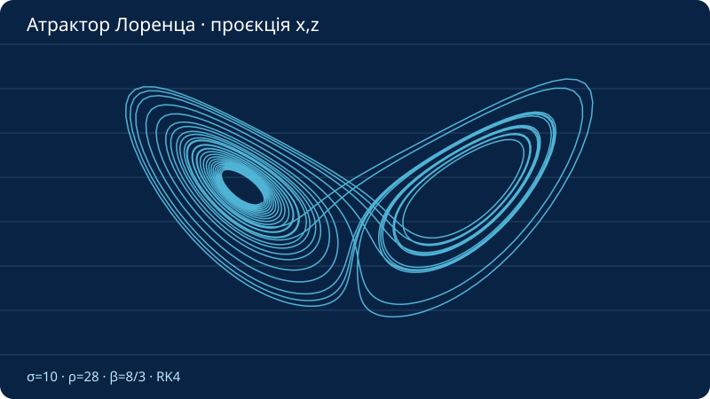
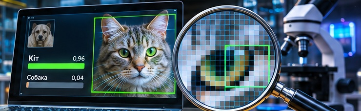
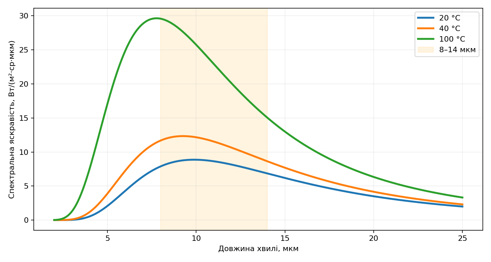
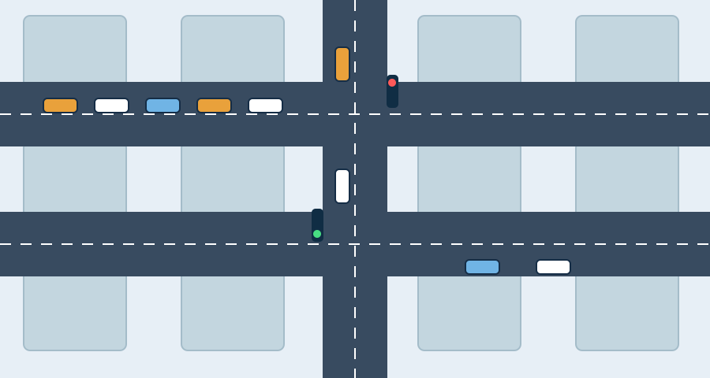
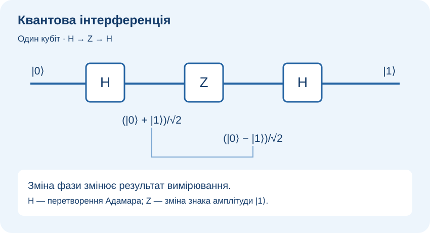
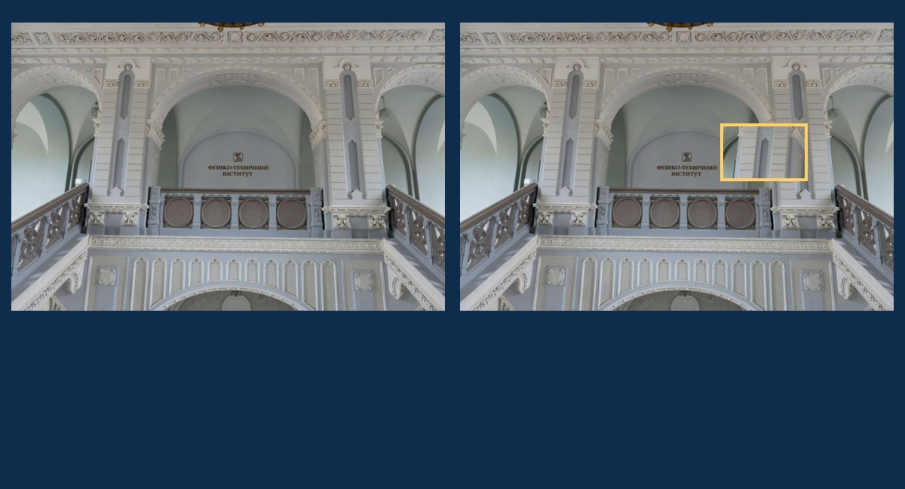

01 · Прикладна фізика · Прикладна математика · Кібербезпека
Телефон загубив тебе
Чому навігатор помиляється та як перевірити координати?
Дослідити
Версія для перегляду колегами · усі дослідження відкриті
01 · Прикладна фізика · Прикладна математика · Кібербезпека
Чому навігатор помиляється та як перевірити координати?
Дослідити02 · Криптографія · Прикладна математика · Кібербезпека
Як узгодити спільний секрет через відкритий канал?
Дослідити
03 · Прикладна математика · Прикладна фізика
Як чутливість до початкових умов обмежує прогноз?
Дослідити
04 · Прикладна математика · Кібербезпека
Що не помічає штучний інтелект?
Дослідити
05 · Прикладна фізика
Чи завжди тепловізор показує справжню температуру?
Дослідити
06 · Кібербезпека · Криптографія
Як відновити подію за файлами, часом і контрольними сумами?
Дослідити
07 · Прикладна математика
Чому додаткова дорога іноді погіршує рух?
Дослідити
08 · Прикладна фізика · Прикладна математика
Як звукові хвилі можуть компенсувати одна одну?
Дослідити
09 · Криптографія · Прикладна математика · Кібербезпека
Як квантові обчислення змінять цифрову безпеку?
Дослідити
10 · Кібербезпека · Прикладна математика
Чи можна довіряти фотографії на екрані?
Дослідити11 · Прикладна фізика · Прикладна математика
Чи вистачить запасу енергії до відновлення електропостачання?
Дослідити
12 · Прикладна фізика · Прикладна математика · Кібербезпека · Криптографія
Як відновити роботу супутника за обмежених ресурсів?
Дослідити